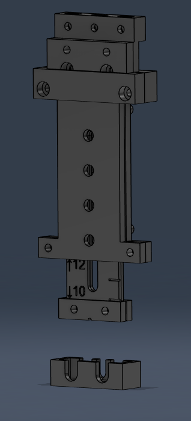

Journal Week 27
Table of Contents
Referencias
2026-07-01
[11:44]
La idea para la graducación de la herramiento de armado de sensores es que si la línea queda completamente escondida el largo del alambre del sensor es el que dice.
[12:18]
Quedó así la herramiento de ensamblado:
